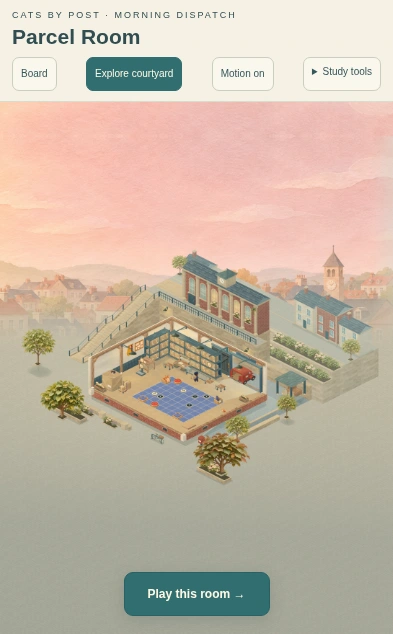
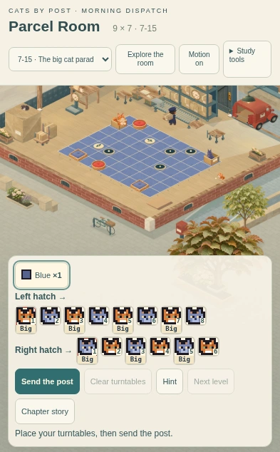

CATS BY POST · PARCEL ROOM · EXPLORE
Space for the whole courtyard
Explore now fills the height beneath a compact header. The town, sky and foreground share one view, with a single “Play this room” button returning to the retained puzzle.
The puzzle panel is hidden and inactive during exploration. Pan, zoom and postal life continue. The normal room and board framing, delivery state and chapter presentations are retained.
Portrait before and after

Corrected: the courtyard uses the available height, with a compact return to play.
Return to the same delivery

The same delivery returns with its original board framing and controls. Explore does not place pieces, spend hints, restart a run or alter saved progress.